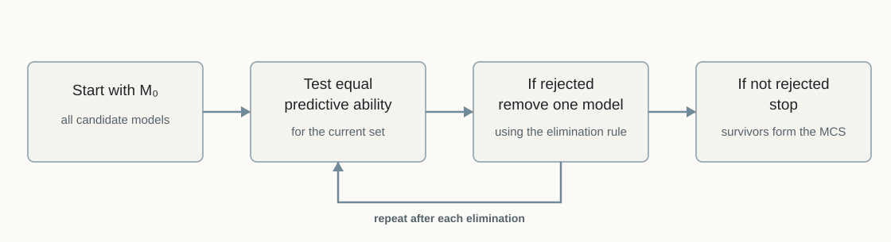
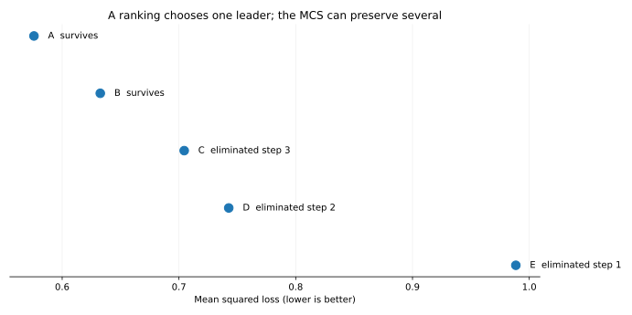

Model Confidence Set
When the data cannot justify a single winner
QM005 · Forecast Evaluation · Advanced
Core idea. A Model Confidence Set (MCS) keeps the models that the available data cannot reliably distinguish from the best under a stated loss criterion and confidence level.
Use it for. Comparing several forecasting models when forcing a single winner would hide model-selection uncertainty.
It does not establish. That every surviving model is equally good, that a survivor is best with a stated posterior probability, or that the result is independent of the candidate set, loss function, sample, or bootstrap design.
The Question
Suppose five models are evaluated over the same out-of-sample period. One has the lowest average loss.
Does the evidence support naming that model as the winner, or can the data only narrow the field to a set of plausible leaders?
Pairwise tests can compare two models at a time. But when many models are in contention, a long list of pairwise p-values is difficult to interpret and can obscure the uncertainty involved in selecting a winner. The Model Confidence Set procedure of Hansen, Lunde, and Nason approaches the problem directly: begin with the full candidate set, test whether the current models have equal expected performance, remove one model according to the specified elimination rule when the test rejects, and stop when the remaining set can no longer be separated by the chosen procedure (Hansen et al. 2011).
Why It Matters
A ranking always produces a first-place model. The data may not contain enough information to support that degree of certainty.
This distinction is especially important when:
- many models have similar out-of-sample loss;
- the evaluation sample is short or noisy;
- forecast losses are serially dependent; or
- model choice itself is part of the scientific conclusion.
A large MCS is therefore not automatically a failed analysis. It can be an honest statement that the sample does not separate the candidates sharply. Hansen, Lunde, and Nason emphasize this feature explicitly: informative data can lead to a small set, while less informative data can leave many models in the set (Hansen et al. 2011).
From a Ranking to a Set
Let the initial candidate set be
\[ \mathcal{M}_0=\{1,\ldots,m\}, \]
and let \(L_{i,t}\) denote the loss of model \(i\) at evaluation date \(t\). For two models, define the relative loss
\[ d_{ij,t}=L_{i,t}-L_{j,t}. \]
The population mean relative loss is
\[ \mu_{ij}=E[d_{ij,t}]. \]
For a current set \(\mathcal{M}\subseteq\mathcal{M}_0\), the equal-predictive-ability null is
\[ H_{0,\mathcal{M}}:\mu_{ij}=0 \quad \text{for all } i,j\in\mathcal{M}. \]
The MCS algorithm combines two pieces (Hansen et al. 2011):
- an equivalence test for the current set; and
- an elimination rule that identifies which model to remove if the null is rejected.

This sequential structure is the key idea. The procedure does not choose the best model first and then build an uncertainty statement around that fixed choice. The set itself is the output of repeated testing and elimination.
A Transparent \(T_{max}\) Version
One implementation uses each model’s loss relative to the average loss of the models still under consideration. Let
\[ \bar L_i=\frac{1}{P}\sum_{t=1}^{P}L_{i,t}, \]
and, for the current set \(\mathcal M\) with \(|\mathcal M|\) members,
\[ \bar d_{i\cdot}=\bar L_i-\frac{1}{|\mathcal M|}\sum_{j\in\mathcal M}\bar L_j. \]
A standardized relative-loss statistic is
\[ t_{i\cdot}=\frac{\bar d_{i\cdot}}{\widehat{\operatorname{se}}(\bar d_{i\cdot})}. \]
The \(T_{max}\) statistic is
\[ T_{max,\mathcal M}=\max_{i\in\mathcal M} t_{i\cdot}. \]
Because higher loss is worse, the model with the largest positive standardized excess loss is the natural elimination candidate when the test rejects. This pairing of test statistic and elimination rule is one of the coherent implementations developed by Hansen, Lunde, and Nason (Hansen et al. 2011).
The original paper also develops a range statistic based on pairwise standardized loss differences. The MCS is a framework, not a single universal numerical recipe. A reported result should identify the test statistic and elimination rule that were actually used.
Why Bootstrap Resampling Enters
The null distribution of the multiple-model statistic is not generally a simple textbook distribution. Forecast losses can also be dependent over time.
Bootstrap resampling provides a practical way to estimate the uncertainty of the relative losses and the distribution of the set-level statistic (Hansen et al. 2011). In a time-series application, the resampling scheme should preserve dependence that matters for the loss sequence.
The worked example below uses a moving-block bootstrap and resamples the same time indices jointly for every model. That joint resampling matters: the models are evaluated on the same dates, so their loss sequences should remain aligned.
For its finite set of 999 bootstrap draws, the implementation reports the Monte Carlo tail probability as \((1+K)/(B+1)\), where \(K\) is the number of bootstrap statistics at least as large as the observed statistic and \(B\) is the number of draws. This is an explicit finite-draw convention; Hansen, Lunde, and Nason write the bootstrap empirical tail proportion with denominator \(B\) in their algorithm (Hansen et al. 2011). The choice can change a reported finite-\(B\) p-value slightly, so it should be reported as an implementation convention rather than treated as part of the universal definition of the MCS.
Changing the resampling scheme, block length, test statistic, elimination rule, confidence level, or candidate set can change the final MCS. These choices should be specified before interpreting the survivors.
Worked Illustration: One Ranking, Two Survivors
The example uses five synthetic forecast-error sequences and squared-error loss. It is designed to show how a clear sample ranking can still lead to a multi-model confidence set. The numerical values are not evidence about typical MCS size in real forecasting applications.
We evaluate five synthetic models, A through E, over 240 dates. The loss series share a persistent common component, so model losses are correlated through time and across models. The MCS uses:
- squared-error loss;
- a 90% confidence level (\(\alpha=0.10\));
- the \(T_{max}\) statistic;
- the coherent maximum-standardized-excess-loss elimination rule; and
- 999 moving-block bootstrap draws with block length 12.
The sample mean losses are:
| Model | Mean squared loss | Sample rank | 90% MCS |
|---|---|---|---|
| A | 0.576 | 1 | Survives |
| B | 0.633 | 2 | Survives |
| C | 0.704 | 3 | Eliminated |
| D | 0.743 | 4 | Eliminated |
| E | 0.988 | 5 | Eliminated |
Model A has the lowest realized mean loss. The MCS does not conclude that A is uniquely superior. The sequential path is:
| Step | Models remaining | \(T_{max}\) | Bootstrap p-value | Action |
|---|---|---|---|---|
| 1 | 5 | 4.677 | 0.001 | Eliminate E |
| 2 | 4 | 2.081 | 0.089 | Eliminate D |
| 3 | 3 | 2.991 | 0.007 | Eliminate C |
| 4 | 2 | 1.232 | 0.230 | Stop |
The final 90% MCS is therefore
\[ \widehat{\mathcal M}^{*}_{0.90}=\{A,B\}. \]
The correct interpretation is not “A and B are exactly equal.” It is that, under this candidate set, loss function, sample, bootstrap design, statistic, elimination rule, and confidence level, the procedure does not find enough evidence to remove either A or B.

Hands-on Lab: Make the Data Less Informative
The optional lab reproduces the 240-observation baseline and then repeats the same procedure using only the first 80 observations of the synthetic sequence.
Run it yourself. Start with the lab guide. For a self-contained copy, use the complete lab bundle. Direct source: Python · R.
python labs/python/qm005_hands_on.py
python labs/python/qm005_hands_on.py --sample 80In this particular synthetic draw, the 240-observation sample narrows the set to \(\{A,B\}\). With only the first 80 observations, the initial equal-predictive-ability test is not rejected at the 10% level and all five models remain.
That comparison shows how less informative data can leave a wider MCS. It is not a general claim that every shorter sample must produce a larger set; the realized sample and dependence structure also matter.
Implementation Pattern
A transparent sequential implementation has the following shape:
active = initial_models
while len(active) > 1:
relative_loss = mean_loss_relative_to_active_average(active)
standard_error = bootstrap_standard_error(relative_loss)
t_stat = relative_loss / standard_error
tmax = max(t_stat)
p_value = recentered_bootstrap_p_value(tmax)
if p_value > alpha:
break
active.remove(model_with_largest_t_stat)
mcs = activeThe pseudocode is schematic rather than a drop-in implementation. Applied work should document the resampling design, statistic, elimination rule, handling of ties, and numerical treatment of degenerate standard errors.
How to Interpret the Result
The MCS answers a set-based question:
Which candidates survive a sequential attempt to eliminate models that are statistically inferior under the specified comparison?
It does not assign a probability that each surviving model is “the best.” A survivor can have worse realized average loss than another survivor and remain in the set because the available evidence does not justify eliminating it.
The result is also candidate-set dependent. If a relevant model was never placed in \(\mathcal M_0\), the MCS says nothing about it. Hansen, Lunde, and Nason explicitly frame the procedure relative to the initial collection of candidates (Hansen et al. 2011).
Common Mistakes
1. Calling the lowest-loss model the MCS winner
The lowest sample loss is a ranking. The MCS is a set-valued inferential result. If several models survive, forcing a single winner throws away the uncertainty the procedure is designed to preserve.
2. Saying surviving models are proven equal
Stopping means the equal-predictive-ability null is not rejected for the remaining set under the chosen procedure. Non-rejection is not proof of exact equality.
3. Ignoring the initial candidate set
The MCS is conditional on \(\mathcal M_0\). A small final set can still be uninformative about models or strategies that were never included.
4. Resampling each model independently
When models are evaluated on the same dates, independent resampling destroys the cross-model pairing of losses. Time indices should be resampled jointly across the active models.
5. Treating the bootstrap block length as cosmetic
For dependent losses, block length affects the uncertainty estimate and can affect elimination decisions. It should be justified rather than tuned for a preferred final set.
6. Reading a large MCS as a defect
A large set may simply reflect weak information for discriminating among models. That can be the scientifically important result.
Relationship to Pairwise DM Tests
QM004 asks whether two forecast-loss sequences have distinguishable expected loss. MCS extends the problem to a collection of candidates and adds a sequential elimination mechanism that controls the set-building problem rather than reporting a large matrix of pairwise tests (Hansen et al. 2011).
The two tools therefore answer related but different questions:
| Question | Natural tool |
|---|---|
| Are these two pre-specified forecasts distinguishable in expected loss? | Pairwise DM-style comparison |
| Which models can survive a many-model comparison without forcing one winner? | Model Confidence Set |
A Practical Reporting Checklist
When reporting an MCS, state:
| Item | What to report |
|---|---|
| Candidate set | Which models entered \(\mathcal M_0\)? |
| Evaluation sample | Which dates and how many observations? |
| Loss function | What criterion defines “better”? |
| Confidence level | What value of \(1-\alpha\)? |
| Test statistic | \(T_{max}\), range statistic, or another valid implementation? |
| Elimination rule | Which model is removed after rejection? |
| Resampling | Bootstrap type, number of draws, and block design? |
| Final set | Which models survive? |
| Elimination path | Which models were removed and at what stage? |
| Sensitivity | Are conclusions materially sensitive to defensible implementation choices? |
When Not to Use It
MCS is not the right tool when:
- only two pre-specified forecasts are being compared and a pairwise test answers the scientific question directly;
- the candidate models are evaluated on different targets, horizons, dates, or loss functions;
- the loss sequence is too short to support credible resampling or variance estimation;
- the initial candidate set was selected using the same evaluation outcomes in a way that invalidates the intended inference; or
- the goal is to estimate model probabilities under a Bayesian framework rather than construct a frequentist confidence set.
Used in SlackQuant Research
Beyond Average Accuracy: Statistical Distinguishability and Temporal Concentration in Data-Rich Macroeconomic Forecasting reports 90% Model Confidence Sets across target-horizon-loss panels. The broad retention of models is interpreted as evidence that the evaluation data often do not sharply separate the candidate forecasting approaches, rather than as a requirement to force a single winner.
Reproducibility
The accompanying materials include the synthetic loss panel, code, figures, and a hands-on lab in Python and R. The supplied resampling draws reproduce the elimination path and final 90% Model Confidence Set shown above.